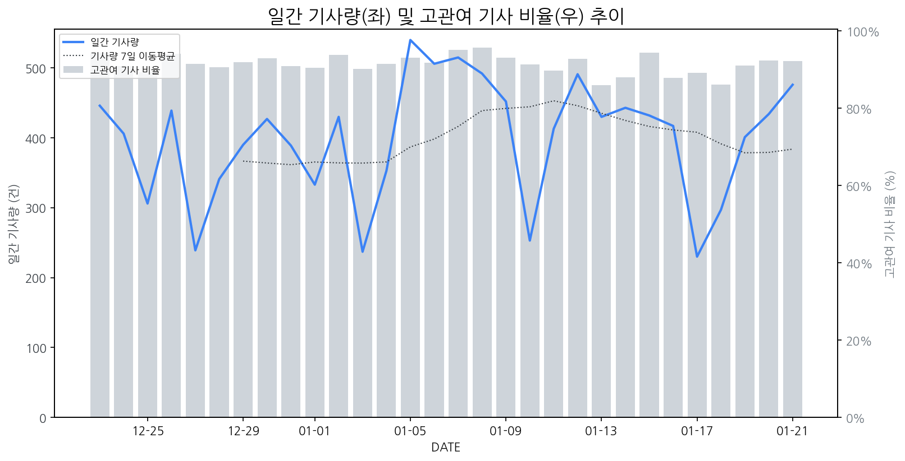

1
시장 활동 지표
기사량 추세 & 이상 징후 탐지
시장의 '전체 기사량'이 평소보다 비정상적으로 급증했는지(Spike)를 차트로 확인하고, LLM이 분석한 급등의 핵심 원인을 파악할 수 있음

고관여 기사란? 산업 연관 키워드로 수집된 기사들 중 디스플레이 키워드에 가중치를 반영하여 도출된 관련성 높은 기사
수집된 기사 수 (2026-01-21)
476
+7% WoW
기사량 변동 수준 (7일 이동평균 대비)
±6.7% 이하
2
오늘의 키워드
급격한 관심 ↑, 주목해야 할 키워드
1
소니
+5.4σ
소니가 TCL과 TV 사업 협력을 강화하며 프리미엄 시장 공략을 확대하여 파장이 예상됩니다.
Related Metrics
금일 언급량: 24, 전일 대비: +8
Interpretation
삼성·LG, 경쟁 심화
Next Step
핵심 토픽 'MicroLED_Topic' 관련 신호입니다. 3번 섹션(키워드 감성분석)에서 해당 토픽의 감성 변동을 교차 확인하세요.
2
tcl
+4.7σ
소니와 TCL 간 TV 사업 합작 발표로 삼성·LG의 프리미엄 TV 시장 독주에 균열 가능성이 제기되었습니다.
Related Metrics
금일 언급량: 19, 전일 대비: +8
Interpretation
경쟁 심화, 프리미엄 TV 시장 재편
Next Step
'tcl' 관련 상세 기사 및 경쟁사 반응 모니터링
3
삼성디스플레이
+4.6σ
삼성디스플레이가 페라리, 지커 등 주요 완성차 업체에 차량용 OLED를 공급하며 시장 점유율 확대에 성공했습니다.
Related Metrics
금일 언급량: 16, 전일 대비: +16
Interpretation
차량용 OLED 시장 지배력 강화
Next Step
핵심 토픽 'OLED_Topic' 관련 신호입니다. 3번 섹션(키워드 감성분석)에서 해당 토픽의 감성 변동을 교차 확인하세요.
4
레노버
+4.4σ
레노버, 크리에이터/게이머 겨냥 QD-OLED 모니터 신제품 출시로 관심 집중
Related Metrics
금일 언급량: 14, 전일 대비: +11
Interpretation
QD-OLED 수요 증대
Next Step
핵심 토픽 'IT_OLED_Topic' 관련 신호입니다. 3번 섹션(키워드 감성분석)에서 해당 토픽의 감성 변동을 교차 확인하세요.
3
실시간 Risk 키워드
경계해야 할 시그널 탐지
특정 토픽의 부정 감성 점수가 급등할 때 이를 즉시 탐지하고, "근거 기사" 링크를 통해 리스크의 실체를 빠르게 파악할 수 있음
키워드 분석 결과, 오늘은 걱정할 만한 하락 신호가 없습니다. (부정 언급량 변화: +1.5σ 이내)
4
주요 이벤트 모니터링
실시간 산업 동향 파악을 위한 주요 활동
최근 발생한 주요 기업들의 신제품 출시, 투자 등 주요 이벤트를 제공하여 매일 경쟁사 동향을 확인할 수 있음
자동차 부품 관련주인 티피씨글로벌, 휴림에이텍, SJG세종, 아진 등이 시장에서 강세를 보이며 급등했습니다. 이는 자동차 부품 산업 전반에 대한 긍정적인 전망을 시사합니다.
Impact
자동차 부품 시장의 활황은 차량용 디스플레이 수요 증가로 이어져 관련 디스플레이 부품 제조사들에게 긍정적인 영향을 줄 수 있습니다.
Next Step
디스플레이 제조 기업은 차량용 디스플레이 시장의 성장 잠재력을 바탕으로 고품질, 고기능성 디스플레이 솔루션 개발 및 공급망 강화에 집중해야 합니다.
TCL이 소니와의 협력을 통해 프리미엄 TV 시장에서 삼성과 LG의 독주 체제를 흔들고 있다. 이는 TCL의 기술력 강화와 소니의 브랜드 파워 결합으로 경쟁 구도 변화를 예고한다.
Impact
프리미엄 TV 시장의 경쟁 심화로 소비자의 선택권이 확대되고, 기술 혁신 가속화 및 가격 경쟁 심화가 예상된다.
Next Step
삼성과 LG는 차별화된 기술력과 프리미엄 브랜드 경험 강화를 통해 경쟁 우위를 유지하고, TCL의 공세에 대응할 전략을 수립해야 한다.
LG디스플레이가 흑자 전환에 성공하며 1조 원 클럽 재진입을 위한 새로운 경영 전략을 추진한다. 이를 통해 수익성 개선과 지속 가능한 성장을 도모할 것으로 보인다.
Impact
LG디스플레이의 공격적인 수익성 개선 전략은 경쟁사들의 원가 절감 및 효율화 압력을 증가시키고, 향후 디스플레이 시장 내에서의 경쟁 구도를 재편할 수 있다.
Next Step
타 디스플레이 제조 기업은 LG디스플레이의 전략 변화에 맞춰 자체 기술 경쟁력 강화, 원가 경쟁력 확보, 고부가가치 제품 포트폴리오 다각화를 통해 시장 변화에 대비해야 한다.
이벤트 제목은 삼성전자, LG전자, 삼성디스플레이 등 주요 디스플레이 시장 사업자들의 최신 동향을 나타냅니다. 이들은 CERT라는 유형으로 분류되어, 현재 시장에서의 중요한 움직임들을 보여주고 있습니다.
Impact
이들 주요 기업의 CERT(Current Event Reporting Tool) 유형의 동향은 디스플레이 시장의 기술 개발, 투자, 생산 전략 등에 상당한 영향을 미칠 수 있습니다.
Next Step
디스플레이 제조 기업은 삼성전자, LG전자, 삼성디스플레이의 CERT 유형 동향을 면밀히 모니터링하며, 경쟁사의 기술 혁신 및 시장 전략 변화에 대한 인사이트를 확보해야 합니다.
AI 안경이 사용자의 카카오톡 메시지를 인식하여 식당 예약까지 자동으로 처리하는 기술이 공개되었습니다. 이는 개인 비서 역할을 수행하는 AI 기술의 발전을 보여줍니다.
Impact
AI 안경의 이러한 기능 구현은 스마트 안경 디스플레이의 정보 인식 및 처리 능력 향상에 대한 수요를 증가시키고, 웨어러블 디스플레이 시장의 새로운 가능성을 제시합니다.
Next Step
스마트 안경용 고해상도, 저전력 디스플레이 기술 개발 및 AI와의 연동성을 강화하는 방안을 모색해야 합니다.
5
지금 주목해야 할 뉴스 TOP 3
"소니 껍데기 쓴 TCL의 공습"… 삼성·LG, '프리미엄 TV' 독주 체제 흔들...
소니와 TCL은 20일(현지시간) 홈 엔터테인먼트 사업 합작법인(JV) 설립을 위한 양해각서(MOU를 체결하여 소니가 TV 하드웨어의 직접 운영에서 손을 떼고, 브랜드 라이선스와 기술 자문 역할로 물러난다는 것을 의미한다.
소니-TCL ‘TV 동맹’…합작사 세운다
21일 업계와 현지 매체에 따르면 일본 소니는 전날 TV 사업 부문을 물적분할해 중국 TCL과 TV 합작 회사를 설립하기로 했다. 신설 법인의 지분은 TCL이 51%, 소니가 49%를 보유하는 구조로 합작 법인은 기존 ‘소니’ 또는 ‘브라비아’ 브랜드를 사용할 예정이다.
日 소니, TV사업 손뗀다... 中 TCL과 TV 합작사 설립
> 기사 본문이 너무 짧아 요약할 수 없습니다.